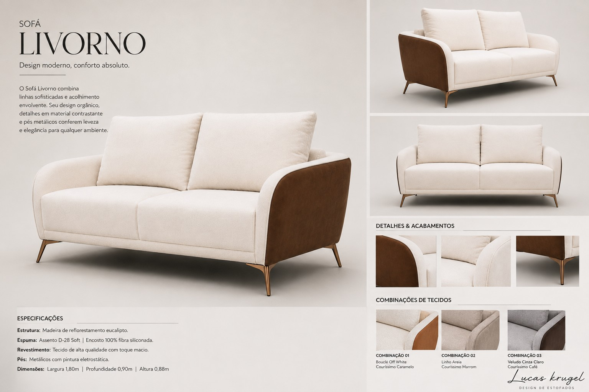

SOFÁS • PROJETO AUTORAL
Sofá Livorno
Design de Estofados & Gestão de Produção

Quer desenvolver um produto comigo?
Projeto, refinamento de conceito e visão prática para fabricação.
SOFÁS • PROJETO AUTORAL
Design de Estofados & Gestão de Produção

Projeto, refinamento de conceito e visão prática para fabricação.